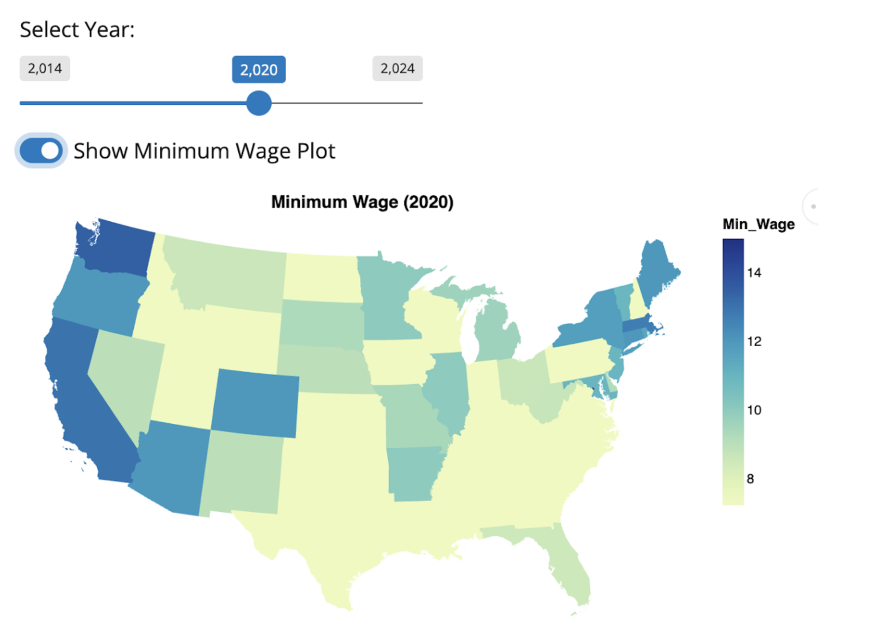

Group13_final_project_writeup
GitHub Usernames: chenxinyi61 & Tribull369
Research Question
This study investigates the relationship between changes in state minimum wages and unemployment rates across the United States during the period from 2014 to 2024. Specifically, it examines how variations in minimum wages influence unemployment rates, with a focus on demographic disparities among White, Black or African American, and Hispanic or Latino populations.
Methodology
Data Sources and Cleaning
To address the research question, data on minimum wages were obtained from LaborLawCenter, while unemployment data were sourced from the U.S. Bureau of Labor Statistics. The analysis involved:
- Data Consolidation: Ten years of data from multiple datasets were merged using
pandas, with minimum wage and unemployment rate data transformed into a long format for consistency. - Preprocessing: Formatting inconsistencies in Excel sheets across years necessitated additional preprocessing to standardize the data.
Data Integration
The cleaned datasets were merged by state, demographic group (race/ethnicity), and year to enable comprehensive analysis. This integration facilitated the examination of correlations between minimum wage changes and unemployment trends across various demographic groups.
Statistical Analysis and Visualizations
The analysis employed both static and dynamic visualization techniques:
- Static Visualization:
- Overall unemployment rate trends and trends in the top 10 states with the highest minimum wage variance were plotted using
Altair. - Scatterplots were created to depict the relationship between unemployment rates and minimum wages, with data from 2020 excluded to mitigate distortions caused by the COVID-19 pandemic.
- Regression analysis was conducted to assess the strength and direction of the relationship between minimum wages and unemployment rates.
- Overall unemployment rate trends and trends in the top 10 states with the highest minimum wage variance were plotted using
- Dynamic Visualization:
- A Shiny app was developed using
GeoPandasto visualize unemployment rates and minimum wages by state, enabling users to select specific years for exploration. - A second Shiny app, built with
Altair, allowed users to explore the relationship between minimum wages and unemployment rates by race (Black, White, Hispanic/Latino) within a selected state.
- A Shiny app was developed using
Challenges
Several challenges were encountered during the analysis:
- Formatting Inconsistencies: The Excel sheets for different years varied in structure, requiring extensive preprocessing to ensure data uniformity.
- Graph Interpretation: The inclusion of all 50 states made the visualizations difficult to interpret. To improve clarity, representative states were selected for analysis.
- Static Minimum Wages: Some states exhibited consistent minimum wages over the study period, complicating the assessment of their impact on unemployment rates.
- Pandemic Effects: The anomalous effects of the COVID-19 pandemic in 2020 introduced distortions, necessitating the exclusion or adjustment of data from that year.
Static Plots
Unemployment Rate Trends in States with High Minimum Wage Variance
Figure 1. Trends in unemployment rates from 2014 to 2024 for the top 10 states with the highest variance in minimum wages. Notable spikes are observed around 2020, likely reflecting the economic impacts of the COVID-19 pandemic.
Relationship Between Minimum Wage and Unemployment Rate

Figure 2. Scatterplot depicting the relationship between minimum wage and unemployment rate across states, with a fitted regression line. The negative slope suggests a slight inverse correlation between minimum wages and unemployment rates.
Shiny App Dynamic Plots
Heatmap of Unemployment Rates and Minimum Wages Across the U.S.
Minimum Wage by State

Figure 3. Heatmap illustrating minimum wages by state for a selected year. The visualization highlights state-level differences in wage policies.
Unemployment Rate by State
Figure 4. Heatmap showing unemployment rates by state for a selected year. This dynamic visualization allows users to compare state-level unemployment trends.
The Shiny app integrates these visualizations, enabling users to dynamically compare unemployment rates and minimum wages across U.S. states by year. It provides insights into potential correlations and state-level trends.
Unemployment Rate vs. Minimum Wage by State and Race

Figure 5. Scatterplot of unemployment rates versus minimum wages for a selected state (e.g., California), disaggregated by racial groups (White, Black, and Hispanic/Latino). The app allows users to explore demographic-specific trends, highlighting the distinct effects of minimum wage policies.
Findings and Policy Implications
Our analysis suggests that increases in minimum wage are generally associated with a decrease in unemployment rates. However, the magnitude and direction of this relationship vary by state and demographic group. Key findings include:
- Demographic Differences: The unemployment rate is typically lower for White individuals. However, changes in minimum wage have a more pronounced effect on unemployment rates for Black or African American populations.
- Policy Frequency: States with frequent changes in minimum wage policies exhibited more significant impacts on unemployment rates, suggesting that policy consistency may influence economic outcomes.
Policy Implications
Strengthening Support Systems for Vulnerable Groups: Since Black or African American workers experience greater effects from minimum wage changes, supportive measures are necessary to maximize benefits and minimize risks. Therefore, introduce targeted workforce development programs, such as subsidized job training, to help individuals from affected demographic groups transition to stable, higher-paying roles. Expand access to childcare and transportation for low-income families, addressing non-wage-related barriers to employment.
Regional and Sector-Specific Wage Policies: The variation in effects by state highlights the need for flexible policies that account for local economic conditions.
Future Work
Machine Learning Applications: Use advanced machine learning models, such as time series forecasting and classification algorithms, to predict unemployment trends under varying wage policy scenarios.
Add finacial measurement: Develop a predictable minimum wage growth plan, such as introducing incremental adjustments tied to inflation or productivity growth.
Conclusion
This project examines the relationship between minimum wage changes and unemployment rates in the U.S. from 2014 to 2024, emphasizing demographic and state-level variations. Our findings indicate a generally negative correlation between minimum wage increases and unemployment rates, with more pronounced effects on Black and Afircan American populations compared to White individuals. States with frequent policy changes demonstrated more noticeable impacts.
These insights highlight the importance of designing wage policies that address regional and demographic disparities. Future research should investigate long-term trends, regional disparities, and the effects on vulnerable populations, employing advanced techniques like machine learning for enhanced predictive analyses.